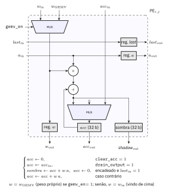
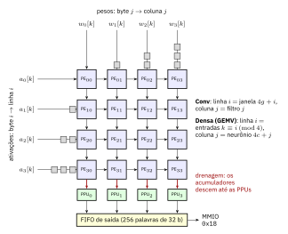
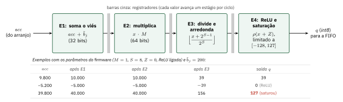

Núcleo de cálculo¶
O núcleo (npu_core.vhd) reúne o arranjo sistólico \(4\times4\) e os registradores que alinham os dados na entrada. Cada coluna do arranjo termina em uma unidade de pós-processamento (PPU), que converte o resultado para INT8.
Elemento de processamento¶
Cada PE (mac_pe.vhd) recebe um peso e uma ativação, multiplica-os, soma o produto ao seu acumulador de 32 bits e repassa os dois valores aos vizinhos de baixo e da direita no ciclo seguinte.

mac_pe.vhd). O multiplexador do peso escolhe, no modo GEMV, o peso próprio do PE no lugar do que vem de cima; a marca last, que viaja com as ativações, fecha um tile encadeado, cujo resultado vai para o acumulador sombra enquanto o acumulador recomeça do zero.Além da MAC, o PE tem três recursos usados pelos mecanismos de movimentação de dados:
- Zerar o acumulador (
clear_acc) entre um cálculo e o seguinte; - Peso próprio (
gemv_en): no modo GEMV, o peso vem da memória de pesos em bancos, e não do PE de cima; - Acumulador sombra: quando a marca
lastchega, o PE copia o resultado do tile que terminou para o acumulador sombra e recomeça do zero no mesmo ciclo, para que o tile seguinte comece sem esvaziar o arranjo.
Arranjo sistólico¶
No arranjo \(4\times4\), as ativações entram pela esquerda e andam uma coluna por ciclo, e os pesos entram pelo topo e descem uma linha por ciclo. Cada PE deve multiplicar a \(k\)-ésima ativação de sua linha pelo \(k\)-ésimo peso de sua coluna. Como os dados levam alguns ciclos para chegar aos PEs mais distantes, a entrada de cada linha e de cada coluna é atrasada na medida certa (skew) para que os pares corretos se encontrem. Depois de \(K\) passos, o PE da linha \(i\) e coluna \(j\) contém
ou seja, os 16 PEs calculam juntos um bloco \(4\times4\) de um produto de matrizes: quatro vetores de entrada contra quatro vetores de pesos. Cada PE fica responsável por um único resultado, que permanece nele durante todo o cálculo; por isso o fluxo é chamado de estacionário na saída (Output Stationary). No fim, vem a drenagem: os acumuladores descem uma linha por ciclo até as PPUs, na base do arranjo, e cada ciclo de drenagem gera na FIFO uma palavra de 32 bits, com um byte por coluna. Nos ciclos sem dado válido entram zeros, que não alteram as somas.

A cada ciclo, uma palavra de 32 bits da RAM de ativações fornece um elemento para cada linha (o byte \(i\) vai para a linha \(i\)), e uma palavra da RAM de pesos, um elemento para cada coluna (o byte \(j\) vai para a coluna \(j\)). O funcionamento ciclo a ciclo, com exemplos numéricos, está em Como o arranjo calcula.
Unidade de pós-processamento (PPU)¶
Cada coluna do arranjo termina em uma PPU (post_process.vhd), que converte o acumulador de 32 bits em um INT8. A transformação é
em que \(b\) é o viés da coluna, \(M\) o fator de escala, \(S\) o deslocamento à direita e \(Z\) o ponto zero; a ReLU é aplicada quando habilitada no registrador FLAGS. Para alcançar a frequência de 100 MHz, a conta é dividida em um pipeline de quatro estágios:
- Soma do viés: o acumulador recebe o viés da sua coluna (32 bits).
- Escala: o resultado é multiplicado por \(M\) (produto de 64 bits), num estágio próprio por causa do tamanho do multiplicador.
- Arredondamento e deslocamento: soma-se \(2^{S-1}\) e desloca-se \(S\) bits para a direita, o que divide por \(2^S\) arredondando para o mais próximo.
- Ponto zero, ReLU e saturação: soma-se \(Z\), zera-se o valor se a ReLU estiver ligada e ele for negativo, e satura-se na faixa do INT8.

Os estágios funcionam como uma linha de montagem: cada resultado leva 4 ciclos para atravessar a PPU, mas sai um novo a cada ciclo, sem reduzir a vazão do arranjo. Os parâmetros \(M\), \(S\), \(Z\) e a ReLU são configurados pelos registradores QUANT_MULT, QUANT_CFG e FLAGS. O firmware da CNN usa \(M=1\), \(S=8\) e \(Z=0\), o que equivale a dividir por 256, arredondar e saturar.